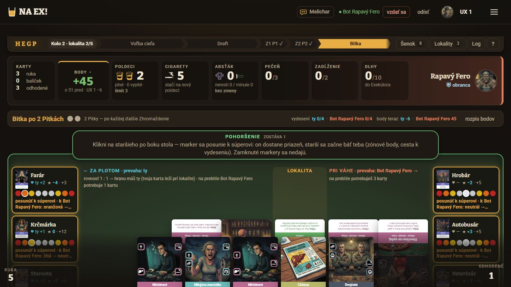
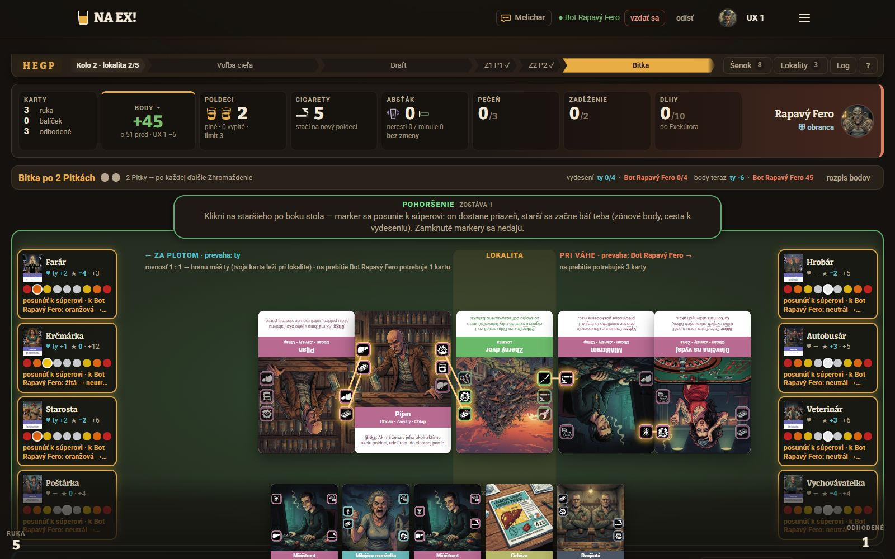
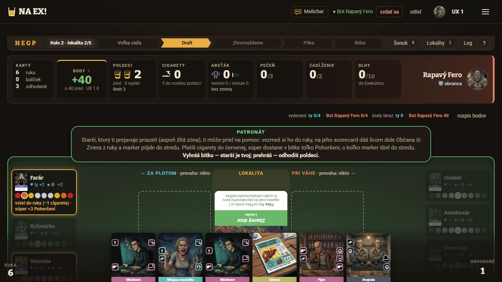
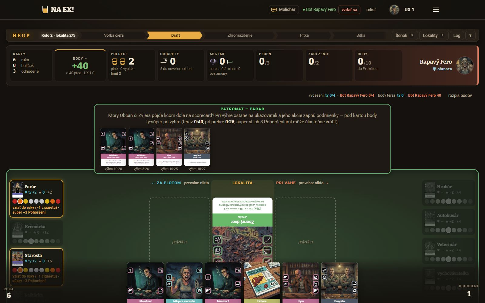
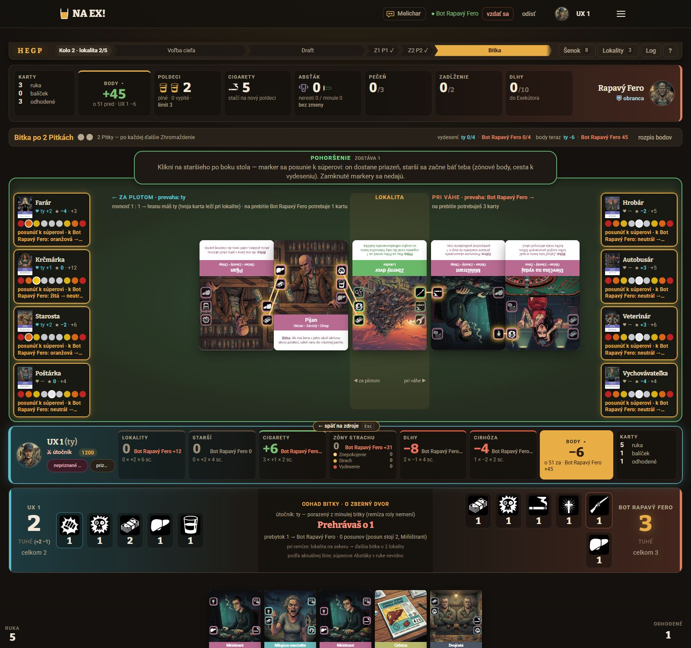
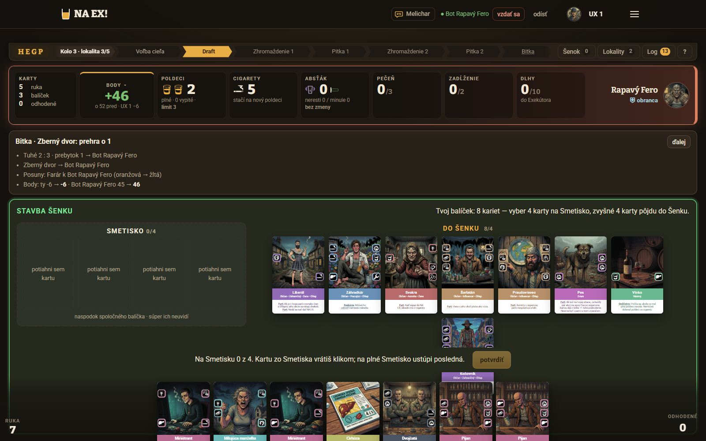
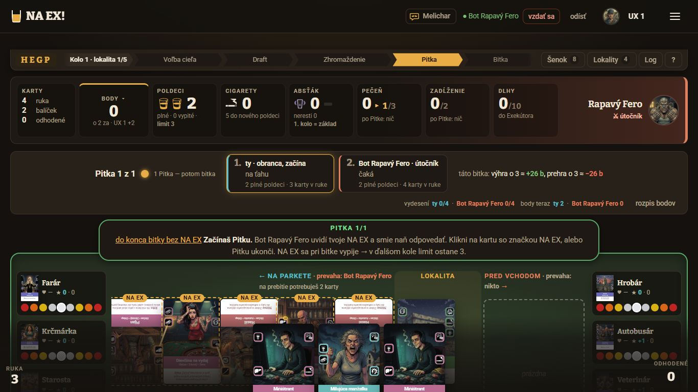

Cieľ: celý herný stôl /hra (#67 + #68 + #69). Hlavný výstup je interaktívne HTML UI dizajnéra s variantmi; tento dokument rieši ich toky a použiteľnosť. Starší (scorecardy, markery priazne, stupnice strachu, body po starších) sa podľa #68 ukážu namiesto línie kariet — na klik na Body v bare hráča a samy pri krokoch Pohoršenie, prebytok a patronát. K tomu nové počítadlo doberacieho balíčka vľavo dole. Cieľové rozlíšenia sú 1600×1000 a 1920×1080, všetko bez posúvania. Pracovný strom naex-ui, vetva ui/body-dlazdice (f61c703).
Používateľ Hráč počas partie (dvaja, dva prehliadače), na obrazovke 1600×1000 až 1920×1080. Často začiatočník, ktorý ešte nechápe, že posun staršieho k súperovi dáva súperovi priazeň a tebe strach do bodov.
Úlohy (jobs to be done)
Zistiť, prečo mám (a súper má) toľko bodov.
V kroku vybrať staršieho a vedieť, čo mi to dá.
Patronát: vybrať staršieho a kartu na scorecard.
Vidieť, čo súper urobil so staršími.
Počas Pitky nestratiť prehľad bez kliku.
Vedieť, čo mi ešte ostalo v balíčku a ako blízko som k prehre „balíček pod 5“.
Ako som to skúmal Kód (HernaPlocha.tsx, Scorecard.tsx, Panely.tsx, RozpisDlazdice.tsx, skratky.tsx), vlastná partia proti botovi (playtest/20261023-060721) až po Pohoršenie a patronát, snímky pri 1366, 1600 a 1920, názory z webu a nezrovnalosti AI hráčov.
Verdikt
Presunúť starších na miesto línie kariet je dobrý ťah. Dnes je v kroku Pohoršenie aj pri 1600 a 1920 rozhodujúce číslo náhľadu („Fero −11“) odrezané a spodní starší sú pod rukou. Riziko #68 je inde: starší sú v tejto hre cennejší než lokalita, a keď ich skryjeme, hráč prestane vidieť, čo s nimi robí súper. Preto návrh stojí na dvoch spoločných pravidlách — N1 (prepínač, „Späť na stôl“, signály bez kliku a stôl s pevnou výškou, aby pri prepínaní ani pri rozostupe kariet nič neskákalo) a N2 (kroky so staršími a návrat) — a na jednom z troch vzhľadov línie. Ako vzhľad odporúčam variant B – dlaždice so stupnicou: plné scorecardy (variant A) majú pri 1600 ikony okolo 13 px, pri 1920 okolo 16 px. Doberací balíček (N6) je malá zmena s jednou bezpečnostnou podmienkou: zoraďovať treba na serveri.
Východisko: rozhodnutia #67 – #70
Rozloženie — súper hore, ty dole, línia kariet v strede. Ruka a doplnky (Log, Šenok, Lokality, Melichar, ?) ostávajú ako dnes.
#68 — starší nie sú predvolene viditeľní. Klik na Body v bare hráča (alebo súpera) nahradí líniu kariet líniou starších. Späť: znova Body, tlačidlo „Späť na stôl“ alebo Esc. Pri krokoch, kde sa klikne na staršieho (Pohoršenie, prebytok, patronát), sa línia starších ukáže sama a po kroku sa vráti línia kariet. Starší po bokoch (#55 B) zanikajú.
#69 — línia starších ukáže priazeň oboch hráčov, patronát, body za starších a Pohoršenie s hranicami zón.
#70 — body sú len dlaždice v bare hráča (Spoločný účet a Dva účty zrušené).
#67 — línia, ruka a oba bary na jednej obrazovke bez posúvania pri 1600×1000 a 1920×1080 (1366×768 už netreba).
Línia kariet nie je v jednej úrovni — karty sa posúvajú nahor a nadol, aby sa spárované akcie stretli slot pri slote (bez spojníc). Línia je preto vyššia o najväčší posun. „Línia rovno“ (a41b8d7) Michal 23. 10. odmietol, opravu robí Bugfixing. Pozri rozpočet výšky.
Doberací balíček — číslo „Ruka“ vľavo dole nahradí počet kariet v doberacom balíčku (zrkadlo k „odhodené“ vpravo). Klik ukáže karty balíčka zoradené podľa mena, poradie ostáva tajné.
Snímky v časti „Toky dnes“ sú aj z 1366×768, kde sú problémy najviditeľnejšie. To isté (orezaný náhľad, spodok pod rukou) platí aj pri 1600 a 1920 — pozri snímky 1600.
Toky dnes
Partia UX 1 proti botovi Rapavý Fero (krátka hra, 5 lokalít). Po 1. bitke bot rozdelil prebytok 7, v 2. kole som mal patronát a Pohoršenie.
Úloha 2: vybrať staršieho pri Pohoršení
Dnes (1 klik, ale naslepo)
Pilulka: „Klikni na staršieho po boku stola…“
Hráč hľadá v dvoch stĺpcoch po 4. Pri 1366 vidí len Farára a Krčmárku vľavo, Hrobára a Autobusára vpravo — zvyšok je pod rukou, treba posúvať.
Na dlaždici je náhľad orezaný na dva riadky: „posunúť k súperovi · k Bot Rapavý Fero: oranžová →…“. Body („ty ±0, súper −11“) a priazeň sú len v title — myšou po chvíli, dotykom vôbec.
Klik → posun → hneď ďalšie kolo (stavba šenku), výsledok ostane len v účte bitky.
Čo hráč potrebuje
Vidieť všetkých 8 naraz, bez posúvania.
Pri každom staršom vidieť, koľko to dá jemu a koľko súperovi, a komu ostane priazeň.
Vedieť, prečo niektorého nemôže vybrať (zámok).
Po kliku vidieť výsledok skôr, než stôl prepne na nové kolo.

1366×768, krok Pohoršenie: viditeľní 4 z 8 starších, ruka prekrýva stôl, náhľad končí „oranžová →…“.

1600×1000: všetkých 8 svieti rovnako; rozhodujúci rozdiel (Farár a Starosta „Fero −11“, Poštárka „±0“) nevidno ani pri 1920.
Úloha 3: patronát
Dnes (3 kliky, pilulka narastie)
Pilulka s dlhým vysvetlením (4 riadky), starší-kandidáti svietia po bokoch, tlačidlá s menami a „neberiem“ na hrane stola.
Klik na staršieho → pilulka narastie o rad kariet z ruky (84 px), ktoré sú zároveň v ruke. Pod nimi „výhra 10:28“ bez legendy — čie je ktoré číslo?
Klik na kartu → „vziať do ruky −1 cig.“
Pri 1366×768
Druhý kandidát (Starosta) je pod rukou.
„neberiem“ je mimo obrazovky — hráč nevidí, že patronát môže odmietnuť.

1366×768, patronát: Starosta pod rukou, „neberiem“ mimo obrazovky.

Krok 2: karty z ruky zdvojené v pilulke, „výhra 10:28“ bez mien.
Úloha 1: prečo mám toľko bodov
Dnes vedú k bodom dve rôzne cesty. Dlaždica Body v bare vymení zdroje za 6 dlaždíc rozpisu (po podmienkach). Tlačidlo „rozpis bodov“ v páse kola otvorí nad stolom textový panel s RozpisBodov. Body po starších sú len na dlaždiciach po bokoch („★ −4 · +3“, bez mien) a v lupe scorecardu.

Rozpis v bare (Cigarety +6, Dlhy −8, Cirhóza −4…) a súčasne tlačidlo „rozpis bodov“ v páse (vpravo hore) — dve vizualizácie tej istej veci.
Úloha 4: čo urobil súper so staršími
Bot po 1. bitke rozdelil prebytok 7 naraz. Oznámenie dostaneš len pri zisku priazne a zmizne o 12 s (HernaPlocha.tsx:3044–3066). Po mojom Pohoršení začalo hneď 3. kolo a jediná stopa je účet bitky: „Posuny: Farár k Bot Rapavý Fero (oranžová → žltá)“. Pri #68 navyše starší na stole nebudú — bez N2 sa hráč o posunoch dozvie len z tohto riadku.

Po bitke: zmenu starších nesie len textový riadok „Posuny“, stôl je už v ďalšom kole.

Pitka pri 1366: stĺpce starších (2 × 176 px) zužujú líniu kariet, a tá je aj tak napoly pod rukou. Toto rieši #68 spolu s #67.
Signály z playtestov a spätnej väzby
„Posun starších je v tejto hre cennejší než lokalita.“ — Paragrafista Vilo (AI), názor #33: 6 posunov prebytkom = +44 b, súper ich jednou bitkou vrátil.
„Starší, ktorý sa ťa bojí na oranžovej, 12 bodov… Toto som si musel poskladať zo scorecardov v 1. kole… Náhľady bodov pri patronáte, Pohoršení a prebytku boli pritom výborné.“ — Eva Stratégová (AI), názor #14. Pozn.: AI hráči čítajú náhľad z konzoly celý. V prehliadači je dnes orezaný.
„Prebytok sa nedá odmietnuť… v zozname ťahov chýba koniec / preskočiť.“ — nezrovnalosti AI hráčov (viackrát) a názor #31. Je to otázka pravidiel, preto je medzi otázkami, nie v návrhoch.
Oznamy priazne vznikli, lebo porazená v playteste 20261016-134912 nepochopila, že súper získal priazeň (komentár v HernaPlocha.tsx:3039). Bez starších na stole sa toto nepochopenie vráti, ak ho nič nenahradí.
Audit použiteľnosti
Závažnosť podľa Nielsena: 4 = katastrofa, 3 = veľký problém, 2 = menší, 1 = kozmetický. „#68“ označuje riziko, ktoré vznikne až skrytím starších.
Problémy, dôkaz a ktorý návrh ich rieši
#
Problém
Heuristika
Záv.
Dôkaz
Rieši
U1
Náhľad posunu je orezaný na zónu, body a priazeň sú len v title. Rozhodnutie robí hráč bez čísla, na dotyku úplne naslepo.
Viditeľnosť stavu, prevencia chýb
3
snímky 1366/1600/1920; Scorecard.tsx:358–362, hra.css:4966 (line-clamp 2), text HernaPlocha.tsx:2944
N2, N3–N5
U2
Krok so staršími sa nezmestí: pri 1600×1000 sú Poštárka a Vychovávateľka napoly pod rukou a „neberiem“ pri patronáte je na spodnom okraji pod kartami ruky; pilulka patronátu (krok 2) odtlačí stôl o ďalších 130 px. Pri 1366 je vidno len 4 z 8.
Skákanie rozloženia: línia kariet s rozostupom (posun kariet o sloty) je vyššia o najväčší posun a línia starších má inú výšku. Ak stôl nemá pevnú výšku, pri každom vyložení a pri prepnutí Body ⇄ starší poskočí môj bar aj ruka — a hráčovi utečie karta spod kurzora.
Konzistencia, prevencia chýb
3
rozhodnutie o rozostupe (koordinátor 23. 10.); slot = 12,6 % výšky karty (geometriaKarty, sloty y 23/51/80/108 z 227)
N1, rozpočet
U15
Titulok dlaždice Karty tvrdí „Keď doberací balíček klesne pod 5 kariet, hráč prehráva“. Pravidlo pritom ráta doberací + odhadzovací + ruku. S novým počítadlom balíčka vľavo dole by sa omyl ešte zosilnil.
„RUKA 5“ vľavo dole opakuje to, čo hráč vidí (ruku), kým obsah vlastného balíčka nevidí nikde — musí si pamätať, čo do neho dal (stavba šenku, odhodené, zamiešanie).
Rozpoznanie namiesto pamätania
2
HernaPlocha.tsx:4064–4066; view.ts:3–10 (balíček sa dnes neposiela)
N6
U3
#68: keď súper posúva markery, hráč ich nevidí. Oznam príde len pri zisku priazne (12 s), účet bitky je text a stôl prepne na nové kolo.
Viditeľnosť stavu
3
HernaPlocha.tsx:3044–3066, snímka po bitke, názory #33 a #14
N2
U4
#68: hráč nevie, že línia kariet je dočasne preč a kde je. Body v bare dnes vymieňa len vlastný bar, stôl sa nemení — model „Body = rozpis v bare“ si hráč už osvojil.
Viditeľnosť stavu, zhoda so svetom
3
Panely.tsx:704–733 (Body ovláda len rozpis baru)
N1
U5
#68: priazeň účinkuje v zdrojoch (prah Exekútora 18, barter −3), ale nikde nie je stopa, odkiaľ. Po skrytí starších nebude jasné, prečo má hráč „/18“.
Rozpoznanie namiesto pamätania
2
snímka 1920 (Dlhy 2/18 bez zdroja); UCINOK_PRIAZNE v Scorecard.tsx:175
N1
U6
„★ −4 · +3“: čie je ktoré číslo, sa dá zistiť len z farby a poradia.
Zhoda so svetom, WCAG 1.4.1
2
Scorecard.tsx:344–346
N3–N5
U7
Dva vstupy k bodom s rôznou vizualizáciou: dlaždica Body (bar) a „rozpis bodov“ v páse (panel nad stolom).
Konzistencia
2
HernaPlocha.tsx:3389 a 3768–3792; Panely.tsx:704
N1
U8
Patronát krok 2 zdvojí karty z ruky v pilulke, pilulka narastie a odtlačí stôl; „výhra 10:28“ bez legendy.
Minimalizmus, zhoda so svetom
2
HernaPlocha.tsx:2154–2158, snímka krok 2
N2
U9
Neklikateľný starší v kroku nepovie prečo (krajná pozícia, limit 2 hraníc zón, Pohoršenie na krajnú). Pilulka hovorí len „Zamknuté markery sa nedajú“.
Pomoc pri chybách
2
HernaPlocha.tsx:2959–2966, 2799
N2
U10
Esc už dnes zatvára tri rôzne veci (rozpis v bare, zoznam skratiek, lupu) a každá ho počúva na window. Línia starších pridá štvrtú, preto treba určiť poradie.
Kontrola a sloboda
2
Panely.tsx:393–402, skratky.tsx:45
N1
U11
Stav „rozpis“ žije v každom bare zvlášť. #68 potrebuje jeden stav stola (karty / starší a z čieho pohľadu).
Konzistencia (implementácia)
2
Panely.tsx:390
N1
U12
Poloha markera má pre čítačku len „tvoja polovica / súperova / stred“ — chýba sila (zóna) a počet krokov.
WCAG 1.1.1, 1.4.1
2
Scorecard.tsx:351
N3–N5
U13
Mikrocopy „Klikni na staršieho po boku stola“ po #68 prestane platiť.
Zhoda so svetom
1
HernaPlocha.tsx:2799, 2813
N2
Nový tok: stavy stola
Stôl má dva pohľady — línia kariet (v ovládaní „Stôl“) a Starší — a jeden stav pre oboch hráčov v HernaPlocha. Pohľad Starší má tri dôvody: prezeranie (hráč si ho otvoril), krok (Pohoršenie, prebytok, patronát — u oboch hráčov) a výsledok (po poslednom posune, kým si ho hráč neprečíta).
Návrhy
N1 · Prepínač stola, „Späť na stôl“, pevná výška a signály bez kliku malá – strednárýchla výhra
Rieši
U4, U5, U7, U10, U11, U14 — platí pre všetky varianty A/B/C.
Myšlienka
Starší sú skrytí, no hráč ich nestratí. Vždy vidí, ktorý pohľad má stôl, dostane sa naspäť rovnakou cestou, akou prišiel, a to dôležité zo starších vidí aj bez kliku. Prepínanie pritom nepohne ničím okolo — ani barmi, ani rukou.
Čo presne
Pevná výška stola (U14). Plsť stola má výšku línie kariet s rezervou na najväčší posun (pozri rozpočet) a línia starších dostane presne ten istý box. Pri vyložení karty s posunom, pri prepnutí Body ⇄ starší ani pri automatickom kroku sa tak môj bar a ruka nepohnú. Ak sa línia kariet do rezervy nezmestí, zmenšia sa karty v línii — box nerastie. Je to podmienka, aby „bez posúvania“ platilo v každom stave.
Tlačidlo „Späť na stôl“ (rozhodnutie Michala) v hlavičke línie starších, vľavo hore — tam, kde oko hľadá „späť“. Nesie aj skratku: „← Späť na stôl Esc“. V kroku (N2) sa mení na „Pozrieť stôl“, lebo krok neruší (R8).
Súhrnný pás línie kariet na spodnom okraji línie starších (jeden riadok, 24 px), aby hráč pri starších nestratil prehľad o stole: „Za plotom: 3 karty · prevaha ty | Zberný dvor | Pri váhe: 2 karty · prevaha Fero | odhad bitky 2 : 3“. Klik na pás = „Späť na stôl“.
Záložky stola (návrh, otázka 5) v ľavom hornom rohu plste: [ Stôl 6 ] [ Starší ] (6 = kariet v línii). Je to druhá cesta popri Body — objaví ju aj ten, kto Body nikdy nestlačí — a v každej chvíli ukazuje, kde je línia kariet. Pomenovanie „Stôl“ ladí s tlačidlom „Späť na stôl“. Záložky sú malé (24 px) a výšku stola nemenia. Ak ich Michal nechce, ich úlohu prevezme tlačidlo „Späť na stôl“ a súhrnný pás.
Body v bare je prepínač s aria-pressed. Stlačené Body: „Body ▴ · starší na stole“. Body súpera otvorí tú istú líniu z jeho pohľadu (jeho body vpredu). Druhé Body pri otvorenej línii pohľad prepne, rovnaké Body ho zavrie. Rozpis v bare (6 dlaždíc, #70) ostáva a línia starších ho dopĺňa: bar = body podľa podmienok, stôl = body podľa starších. Prejdenie myšou či fokus na dlaždici „Zóny strachu“ v bare zvýrazní tieto podmienky na všetkých starších na stole, a naopak.
Hlavička línie starších (jeden riadok): „← Späť na stôl Esc · Starší · body z pohľadu ty | Fero · priazeň: ty 3 · Fero 0 · vydesení ty 0/4 · Fero 0/4 · ⓘ“. Priazeň oboch hráčov a vydesení sú tu ako súčet (#69), pri každom staršom potom zvlášť.
Návrat je vždy tou istou cestou: Body, „Späť na stôl“, Esc, S (alebo záložka Stôl). Línia kariet sa vráti aj sama, keď ju hráč potrebuje: začne ťahať kartu z ruky, stlačí N (NA EX!) alebo P (pas). Stôl tak nikdy nezostane v pohľade, kde sa ťah nedá spraviť. Pri návrate ide fokus späť na prvok, ktorý starších otvoril (Body), a línia kariet je v tom istom stave ako predtým (žiadne zrušenie výberu miesta či NA EX).
Zmena za chrbtom: keď súper vyloží kartu alebo dá NA EX, kým máš otvorených starších, súhrnný pás a záložka Stôl dostanú odznak +1 a pilulka povie „Fero vyložil Pijana na tvoju stranu — Späť na stôl (Esc)“. Keď prídeš na ťah v Zhromaždení alebo Pitke, „Späť na stôl“ jemne pulzuje. Za hráča sa tu neprepína — práve si číta.
Jedna cesta k bodom: tlačidlo „rozpis bodov“ v páse kola (HernaPlocha.tsx:3389) a panel starsi-info zrušiť. Text „Ako sa boduje“ (★/♥) presunúť do nápovedy hlavičky línie starších (ikona ⓘ).
Signály bez kliku:
♥ pri zdroji, kde priazeň účinkuje: „DLHY 0/18 ♥“ (titulok: „Farár, priazeň sily 2: prah Exekútora 18 namiesto 10“), „nový poldeci −3 ♥ Starosta“, v odhade bitky „+2 tuhé ♥ Krčmárka“. Rieši U5 a učí, čo priazeň robí, presne tam, kde sa to prejaví.
Zmena bodov od bitky na dlaždici Body: „+45 · ▼ 11 od bitky“, kým hráč neotvorí starších (potom zmizne). Hovorí: „starší sa pohli, pozri sa“.
Ostáva: ohlásené vydesenie (role="alert"), počet vydesených a „body teraz“ v páse a stávka bitky („výhra o 3 ≈ +26 b“).
Tok pred → po (úloha 1: prečo mám toľko bodov)
Dnes
Body → 6 dlaždíc v bare (podľa podmienok).
Body po starších: prečítať 8 dlaždíc „★ −4 · +3“ po bokoch, alebo prejsť myšou každého (lupa).
Alebo „rozpis bodov“ v páse → iný panel s textom.
Po N1 (+ variant)
Body (alebo S) → bar: podmienky, stôl: 8 starších s bodmi „ty / Fero“; nič okolo sa nepohne.
Prejdenie podmienkou v bare → zvýraznia sa starší, ktorí ju bodujú.
Body / „Späť na stôl“ / Esc → línia kariet, fokus na Body.
Mikrocopy
Tlačidlo: „← Späť na stôl“ (+ Esc); v kroku „Pozrieť stôl“ a na stole potom „← Späť na starších“.
Záložky (ak budú): „Stôl 6“, „Starší“. Titulok Starší: „Starší a body po starších (S)“.
Body stlačené: „Body ▴“ s pomocným textom „starší na stole“; titulok „Späť na stôl (Esc)“.
Pilulka pri zmene za chrbtom: „Fero vyložil Pijana na tvoju stranu — Späť na stôl (Esc)“.
Titulok ♥: „♥ Farár (Exekútor, sila 2): prah Exekútora 18 namiesto 10. Priazeň máš, kým je marker na tvojej polovici.“
Prístupnosť
Body má aria-pressed a aria-controls na panel stola; „Späť na stôl“ je obyčajné button (prvé v poradí fokusu v línii starších). Ak budú záložky, tak role="tablist" s dvoma tab a stôl ako tabpanel, šípky ←/→.
Po otvorení klikom alebo klávesom ide fokus na hlavičku línie (tabindex="-1"), po zatvorení späť na prvok, ktorý ju otvoril.
Poradie Esc (jeden spoločný poslucháč, nie štyri na window): lupa → zoznam skratiek → výber na stole → pohľad Starší (len pri prezeraní) → rozpis v bare.
S je voľné (M a 1–4 patria soundboardu); doplniť do SKRATKY_V_PARTII.
Odznak „+1“ na záložke aj v texte pilulky (aria-live="polite" — pilulka ho už má).
Náročnosť
malá – stredná: stav stola presunúť z HracDoska do HernaPlocha (prop pohladStola a onBody), pevná výška plste, „Späť na stôl“, súhrnný pás, spoločný Esc, ♥ titulky v zdrojoch.
Snímky snimka.ts pri 1600×1000 a 1920×1080 pred a po kliku na Body: spodná hrana môjho baru a vrch ruky na rovnakom pixeli (U14). Päťsekundový test so snímkou v pohľade Starší: „Kde sú teraz tvoje karty a ako sa k nim vrátiš?“ (cieľ: 4 z 5 odpovedí „Späť na stôl / Esc / Body“). V playteste s ľuďmi sledovať, či niekto počas Pitky hľadá líniu kariet a nevie sa vrátiť. Pri ♥ sa opýtať: „Prečo máš do Exekútora 18?“
N2 · Kroky so staršími: automatické zobrazenie, náhľad a návrat stredná
Rieši
U1, U3, U8, U9, U13 — platí pre všetky varianty.
Myšlienka
Kým sa hýbu markery — a je jedno, kto ich hýbe —, sú na stole u oboch hráčov starší. Dôsledok každej voľby je napísaný priamo pri staršom. Výsledok ostane na stole, kým si ho hráč neprečíta.
Pravidlá toku
Kedy sa línia starších ukáže sama: keď začne krok Pohoršenie, prebytok alebo patronát — u oboch hráčov. Aktívny hráč vyberá, čakajúci sleduje. Hlavička línie (a záložka, ak bude) ukáže dôvod: „Starší · Pohoršenie“. Pilulka zostane jednoriadková. Prechod je mäkký (krátke prelínanie v tom istom boxe, nič sa neposúva), pri prefers-reduced-motion okamžitý. Ak mal hráč práve otvorenú lupu karty alebo ťahal kartu, prepne sa až po jej zatvorení či pustení.
Čo je klikateľné: len starší, ktorých možno vybrať. Majú rám „cieľ“, kurzor ruky a sú v poradí fokusu. Ostatní sú stlmení so zámkom a dôvodom („krajná pozícia“, „toto Pohoršenie už prešlo 2 hranice zón“, „patronát: priazeň aspoň žltá“). Stlmenie nie je len farba: zámok + text.
Náhľad priamo na staršom, celý a bez title: „k Ferovi: oranžová → žltá · ty ±0 · Fero −11 · ♥ ty 2 → 1“. Pri ±0 aj „do žltej ešte 1 krok“ (existujúci text). Prejdenie myšou alebo fokus ukáže na stupnici ducha markera na cieľovej pozícii a v oboch baroch novú hodnotu Body („Fero 45 → 34“).
Pohoršenie s hranicami zón (#69): stupnica má viditeľné hranice zón (zárez medzi neutrálom a žltou, žltou a oranžovou, oranžovou a červenou). Pri každom staršom je počítadlo „hranice: 1 z 2“ — tvoje Pohoršenia posunú jeden marker v bitke najviac cez 2 hranice zón (pohorsenieMozne, engine.ts:2916) — a zámok pri vyčerpaní („🔒 už 2 hranice zón“). Na krajnú pozíciu Pohoršenie nesmie (okrem Novín), preto pri krajnej bodke stojí zámok s textom „🔒 na krajnú len s Novinami“. Na Kultúrnom dome limit neplatí — počítadlo sa vtedy skryje a hlavička povie „Kultúrny dom: bez limitu hraníc“.
Prebytok „rozdeliť naraz“: prejdenie myšou či fokus na tlačidle očísluje starších v poradí návrhu (①②③) a ukáže súčet „spolu ty +x · Fero −y“. Klik vykoná to isté, ale už to nie je slepé.
Čakajúci hráč vidí posuny naživo: marker sa presunie (≤ 300 ms, pri prefers-reduced-motion bez animácie) a pri staršom ostane stopa „← k tebe · ty +11“ až do konca kroku. Pilulka (aria-live) to zopakuje textom: „Fero posunul Farára k tebe: žltá → oranžová; ty +11.“ Oznamy priazne (12 s) tým nahradíme — stopa nezmizne, kým je krok na stole.
Patronát v línii starších: (1) klik na staršieho-kandidáta — pri ňom „−1 cig. · Fero +3 Pohoršenia · teraz ty 0 : Fero 40“. (2) Karty, ktoré smú ísť na scorecard, sa v ruke vysunú so štítkom „pri výhre ty 10 : Fero 28“, ostatné sa stlmia — rovnako ako dnes pri výbere miesta (ruka volba-miesta). Kartu stačí potiahnuť na scorecard alebo kliknúť. Kópia kariet v pilulke zanikne. (3) „vziať do ruky −1 cig.“ v strede hrany stola, „neberiem“ vpravo, „iný starší“ = klik na iného.
Výsledok sa podrží: po poslednom posune ostane línia starších so zvýraznenými zmenami (stopa + „ty +11 / Fero −3“) a s účtom bitky. Na stôl sa vráti na „ďalej“ v účte bitky, „Späť na stôl“, Esc, alebo sama, keď treba líniu kariet (umiestnenie cieľa kola, vykladanie v Zhromaždení). Bez časovača (WCAG 2.2.1). Na začiatku kola je línia kariet aj tak prázdna, takže podržanie nič nestojí.
Nahliadnutie počas kroku: v kroku sa „Späť na stôl“ mení na „Pozrieť stôl“ — ukáže líniu kariet a krok beží ďalej. Pilulka ostane („Pohoršenie · zostáva 1 — vyber staršieho“) a na stole je „← Späť na starších“. Esc v kroku krok nezruší (niet čo rušiť): zavrie len lupu alebo nahliadnutie.
Tok pred → po (úloha 2: Pohoršenie)
Dnes
Hľadať v stĺpcoch, pri 1366 posúvať.
Myšou na každého a čakať na titulok (8 × hover), alebo hádať.
Klik → hneď nové kolo.
Po N2
Stôl sám ukáže 8 starších v rade; pri každom je číslo „ty / Fero“.
Porovnať pohľadom (0 hoverov), prejdenie ukáže ducha markera a zmenu Body.
Klik → posun so stopou; účet bitky; „ďalej“ → karty.
Mikrocopy
Pilulka Pohoršenie: „Pohoršenie · zostáva 1 — vyber staršieho. Marker pôjde k Ferovi: on dostane priazeň, teba sa začne báť.“
Pilulka prebytok: „Prebytok · zostáva 2 — vyber staršieho (posun stojí 1). Alebo rozdeľ naraz.“
Zámok: „🔒 krajná pozícia“ · „🔒 už 2 hranice zón“ · „🔒 priazeň len žltá a vyššie“.
Patronát, štítok karty v ruke: „pri výhre ty 10 : Fero 28“ (mená, nie „10:28“).
Prístupnosť
V kroku sú klikateľní starší button s aria-describedby na náhľad; zamknutí majú aria-disabled="true" a dôvod v texte — fokusovateľní, aby čítačka prečítala prečo.
Línia je jedna zastávka v poradí Tab; medzi staršími sa chodí šípkami ←/→ (roving tabindex, zľava doprava ako línia kariet). Enter = vybrať, Home/End = prvý / posledný.
Pri automatickom zobrazení nekradnúť fokus čakajúcemu hráčovi. Aktívnemu presunúť fokus na prvého klikateľného staršieho len vtedy, keď bol fokus na body alebo na stole — nie z chatu ani z Melichara.
Ciele aspoň 44 × 44 px (celá dlaždica či riadok staršieho), nie len marker.
Náročnosť
stredná: odvodenie pohľadu z view.faza/bitkaStav.krok/draft.krok pre oboch; náhľad z existujúceho popisPosunu (HernaPlocha.tsx:2920) rozdeliť na časti (zóna / body / priazeň) namiesto jedného reťazca; stopa posunov z rozdielu view.starsi (rovnako ako dnešné oznamy priazne); patronát cez existujúcu voľbu v ruke.
Súbory
HernaPlocha.tsx (klikStarsi, pokyn pre pohorsenie/prebytok/patronat, oznamy priazne, ucetBitky), Scorecard.tsx, hra.css
Ako overiť
(a) Snímky snimka.ts … pri 1600×1000 a 1920×1080 (predvolené a --sirka 1920 --vyska 1080) v kroku Pohoršenie a patronát: všetkých 8 starších, celý náhľad aj tlačidlá hrany bez posúvania. (b) V playteste s ľuďmi pred klikom na staršieho: „Koľko ti tento posun dá a koľko vezme súperovi?“ (cieľ: správne bez prejdenia myšou). (c) Po súperovom prebytku: „Ktorých starších Fero posunul a ku komu?“ (cieľ ≥ 80 % správne). (d) U AI hráčov sledovať v názoroch, či zmiznú vety ako „nevidím, čo sa medzitým zmenilo“.
Rozpočet výšky bez posúvania
Línia kariet má podľa rozhodnutia rozostup: karta sa posunie nahor či nadol, aby sa spárované akcie stretli slot pri slote. Sloty sú na karte vo výškach 23 / 51 / 80 / 108 z 227 (geometriaKarty), krok medzi nimi je teda 12,6 % výšky karty. Spoj slotu 1 so slotom 4 posunie susednú kartu o 3 kroky = 38 % výšky karty. Línia je o najväčší posun vyššia; keď sa posuny reťazia cez viac kariet jednej strany, môže byť aj viac.
Odhad (presné čísla určí UI návrh a Bugfixing). Ruka = viditeľná časť kariet v ruke.
Pás
1600×1000
1920×1080
Hlavička webu + os kola
52 + 40
56 + 40
Bar súpera
100
104
Pás kola (Pitky, vydesení, body teraz)
28
28
Stôl — pevný box
450
500
z toho hlavičky strán / hlavička línie starších
26
26
línia s rezervou 38 %
384 → karta ≈ 278 px
434 → karta ≈ 314 px
hrana stola (tlačidlá kroku) / súhrnný pás
40
40
Môj bar
100
104
Ruka (viditeľná časť)
230
248
Spolu
1000
1080
UX dôsledky:
Box stola má pevnú výšku = línia s rezervou na najväčší dovolený posun. Línia kariet aj línia starších v ňom ležia zvislo vystredené. Keď by rozostup prerástol rezervu (reťazenie posunov), zmenšia sa karty v línii, nie box. Inak by pri každom vyložení poskočila ruka a môj bar a hráčovi by karta, na ktorú mieri, utiekla spod kurzora (U14).
Línia starších dostane rovnaký box a vyplní ho — pri 1600 je na starších ≈ 360 px výšky (bez hlavičky a súhrnného pásu), pri 1920 ≈ 410 px. To je viac, než majú dnes stĺpce po bokoch, takže v kroku sa zmestí celý náhľad.
Rezerva sa v prázdnej línii (začiatok kola, draft) javí ako prázdna plsť. Práve tam sa po bitke podrží výsledok posunov (N2, R7) a v drafte tam leží panel stavby či šenku.
Pilulka pokynu nesmie rásť do výšky: patronát (krok 2) dnes pridá rad kariet z ruky (+130 px). N2 R6 to presúva do ruky.
Tri varianty línie starších (#69)
Čo musí ukázať každý variant (rozhodnutie #69): priazeň oboch hráčov (pri každom staršom „♥ ty +2“ alebo „♥ Fero +1“, v hlavičke súčet „priazeň ty 3 · Fero 0“), patronát („v ruke Fero · +3 Pohoršenia“, karta lícom dole na scorecarde — obsah karty súpera nevidno), body za starších (★ ty / Fero s menami) a Pohoršenie s hranicami zón (zárezy na stupnici, počítadlo „hranice 1 z 2“ v kroku, zámky).
Všetky tri platia s N1 a N2. Drôtené modely sú v mierke obrazovky. Hore je 1920×1080 v pohľade prezeranie (otvorené cez Body, v bare rozpis, „Späť na stôl“ a súhrnný pás línie kariet), dole 1600×1000 v kroku Pohoršenie. Box stola má v oboch pohľadoch tú istú pevnú výšku podľa rozpočtu: 450 px pri 1600×1000, 500 px pri 1920×1080. Dáta sú zo skutočnej partie (UX 1 proti Rapavému Ferovi, 2. kolo pred Pohoršením).
Legenda: kruhy stupnice — tmavšie = vyššia zóna (3 krajná, 0 stred), plný kruh s rámom = marker, prerušovaný rám = duch markera po posune. „ty“ je hráč, ktorý sa pozerá, a jeho polovica je vľavo (zrkadlenie z #55).
N3 · Variant A — rad scorecardov malá – stredná
Rieši
U1, U2, U6, U12 (spolu s N2)
Čo to je
Osem tlačených scorecardov vedľa seba (existujúci komponent Scorecard aj s odznakmi bodov pri podmienkach), pod každým pásik so slovami: „♥ ty +2 · ★ ty −4 · Fero +3“. V kroku leží náhľad cez obrázok karty staršieho (dolná polovica), lebo na ďalší riadok miesto nie je.
Za
Hráč spozná fyzický scorecard z krabice; podmienky a body pri nich sú na mieste; najmenej novej práce.
Proti
Scorecard je takmer štvorec (v/š ≈ 1,05) a ikona podmienky má 7 % šírky. Pri 1600 je scorecard ≈ 184 px a ikona ≈ 13 px, pri 1920 ≈ 223 px a ikona ≈ 16 px; odznaky bodov sú ešte menšie — bez lupy ťažko čitateľné. Náhľad zakryje obrázok, podľa ktorého hráč staršieho spoznáva.
1920×1080 · prezeranie (Body)
NA EX!Melichar · ● Rapavý Fero · vzdať sa · odísť · UX 1 ☰
Bitka po 2 Pitkách ●● · 2 Pitky — po každej ďalšie Zhromaždenievydesení ty 0/4 · Fero 0/4 · body teraz ty −6 · Fero 45
← Späť na stôl EscStaršíbody z pohľadu ty | Feropriazeň: ty 3 · Fero 0vydesení ty 0/4 · Fero 0/4ⓘ ako sa boduje
Farár
Exekútor
Krčmárka
Bitkár
Starosta
Lakomec
Poštárka
Veriaci
Hrobár
Neprajník
Autobusár
Alkoholik
Veterinár
Fajčiar
Vychovávateľka
Úžerník
♥ ty +2: prah Exekútora 18 · bojí sa Fera (2) ★ ty −4 · Fero +3♥ ty +1: +2 tuhé v bitke · bojí sa Fera (1) ★ ty 0 · Fero +12♥ ty +2: barter za 3 · bojí sa Fera (2) ★ ty −2 · Fero +6♥ nikto (+1 Viera) ★ ty 0 · Fero +4♥ nikto (Povery +2) ★ ty −2 · Fero +5♥ nikto (prah Cirhózy 5) ★ ty +3 · Fero +5♥ nikto (+1 cig. v 1. Pitke) ★ ty +3 · Fero +6♥ nikto (prah Dlhu 3) ★ ty −4 · Fero +4
ukážka patronátu: „v ruke Fero · +3 Pohoršenia“ (lícom dole na scorecarde)
Línia kariet: ← Za plotom 3 karty · prevaha ty │ Zberný dvor │ Pri váhe 2 karty · prevaha Fero → │ odhad bitky 2 : 3 klik = Späť na stôl
UX 1 (ty)útočník · nepriznané Cirhóza ×1
Lokality0 Fero +12
Starší0 Fero 0
Cigarety+6 Fero 0
Zóny strachu0 Fero +31
Dlhy−8
Cirhóza−4
Body ▴−6 starší na stole
Karty5 ruka · 0 bal. · 1 odh.
Miňištrant
Milujúca manž.
Miňištrant
Cirhóza
Dvojčatá
BALÍČEK ▸ 0 spolu 6 · prehra pod 5
ODHODENÉ ▸ 1
1600×1000 · krok Pohoršenie
NA EX!Melichar · ● Rapavý Fero · vzdať sa · odísť · UX 1 ☰
Bitka po 2 Pitkách ●● vydesení ty 0/4 · Fero 0/4 · body teraz ty −6 · Fero 45
Pozrieť stôlStarší · Pohoršenie
Línia kariet: Za plotom 3 · prevaha ty │ Zberný dvor │ Pri váhe 2 · prevaha Fero │ bitka 2 : 3 (výsledok)
Pohoršenie · zostáva 1vyber staršieho — marker pôjde k Ferovi: on priazeň, teba sa začne báť
Farár
Exekútor
k Ferovi: oranžová → žltá ty ±0 · Fero −11 ♥ ty 2 → 1
Krčmárka
Bitkár
žltá → neutrál ty ±0 · Fero −3 ♥ ty 1 → nikto
Starosta
Lakomec
oranžová → žltá ty ±0 · Fero −11 ♥ ty 2 → 1
Poštárka
Veriaci
neutrál → neutrál ty ±0 · Fero ±0 do žltej ešte 1 krok
Hrobár
Neprajník
neutrál → neutrál ty ±0 · Fero ±0 do žltej ešte 1 krok
Autobusár
Alkoholik
neutrál → neutrál ty ±0 · Fero ±0
Veterinár
Fajčiar
neutrál → neutrál ty ±0 · Fero ±0
Vychovávateľka
Úžerník
neutrál → neutrál ty ±0 · Fero ±0
♥ ty +2 · ★ ty −4 · Fero +3♥ ty +1 · ★ ty 0 · Fero +12♥ ty +2 · ★ ty −2 · Fero +6★ ty 0 · Fero +4★ ty −2 · Fero +5★ ty +3 · Fero +5★ ty +3 · Fero +6★ ty −4 · Fero +4
UX 1 (ty)útočník
Dlhy2/18 ♥
Zadĺženie0/2
Pečeň0/3
Absťák0
Cigarety5 nový poldeci −3 ♥
Poldeci2
Body ▾−6
Karty5 · 1 · 1
Miňištrant
Milujúca manž.
Miňištrant
Cirhóza
Dvojčatá
Mikrocopy
Pásik pod scorecardom: „♥ ty +2 · bojí sa Fera“ / „★ ty −4 · Fero +3“ (mená namiesto poradia).
Prístupnosť
Odznaky pri podmienkach sú pod 24 px → lupa zostáva nutná (prejdenie myšou aj fokus, Enter v prezeraní ju pripne). aria-label scorecardu: „Farár, Exekútor. Marker: oranžová na tvojej polovici (sila 2). Priazeň ty, bojí sa Fera. Body ty −4, Fero +3.“
Náročnosť
malá – stredná (komponent Scorecard už je; pribudne pásik, vrstva náhľadu a rozmiestnenie).
Päťsekundový test pri 1600: „Za ktorú podmienku ti Farár berie body?“ — ak bez lupy odpovie menej ako polovica, variant A pri 1600 neobstál.
N4 · Variant B — dlaždice so stupnicou strednáodporúčaný
Rieši
U1, U2, U6, U12 (spolu s N2), čitateľnosť pri 1600
Čo to je
Osem stĺpikov zľava doprava (ako karty v línii). Každý má: hlavičku (portrét 40 px, meno, scorecard), veľkú stupnicu (9 × 14 px) s menom zóny pod ňou, mini-scorecard — 4 + 4 podmienky ako ikony 20 px v dvoch stĺpcoch s bodmi pri aktívnych (rovnaké rozloženie ako na tlačenom scorecarde, takže ho hráč spozná) —, riadok ♥ s účinkom a riadok ★ s menami. V kroku sa dolná časť stĺpika vymení za náhľad. Plný scorecard je v lupe.
Za
Čitateľné pri 1600 bez lupy (ikony 20 px, text 12 px); náhľad má vlastný priestor a nezakrýva portrét; stĺpik vyplní box stola (≈ 360 px pri 1600, ≈ 410 px pri 1920) bez prázdnych miest. Účinok priazne napísaný slovami („prah Exekútora 18“) učí hru.
Proti
Nie je to „tá istá kartička“ ako v krabici. Najviac práce na vzhľade — to rieši UI návrh.
1920×1080 · prezeranie (Body)
NA EX!Melichar · ● Rapavý Fero · vzdať sa · odísť · UX 1 ☰
Bitka po 2 Pitkách ●● vydesení ty 0/4 · Fero 0/4 · body teraz ty −6 · Fero 45
Pozrieť stôlStarší · Pohoršenie
Línia kariet: Za plotom 3 · prevaha ty │ Zberný dvor │ Pri váhe 2 · prevaha Fero │ bitka 2 : 3 (výsledok)
Pohoršenie · zostáva 1vyber staršieho — marker pôjde k Ferovi: on priazeň, teba sa začne báť
▢ Farár Exekútor
oranžová · tvoja
Lok +0Zn −2CigStrVy 0Dlh −2CirSt
♥ ty +2 · ★ ty −4 · Fero +3
k Ferovi: oranžová → žltá ty ±0 · Fero −11 ♥ ty 2 → 1
▢ Krčmárka Bitkár
žltá · tvoja
Zn 0Str 0St 0LokCig 0CirDlhVy
♥ ty +1 · ★ ty 0 · Fero +12
žltá → neutrál ty ±0 · Fero −3 ♥ ty 1 → nikto
▢ Starosta Lakomec
oranžová · tvoja
Zn −2Str 0LokCir 0CigDlh 0StVy
♥ ty +2 · ★ ty −2 · Fero +6
oranžová → žltá ty ±0 · Fero −11 ♥ ty 2 → 1
▢ Poštárka Veriaci
stred
Lok 0ZnVy 0CigStrDlhCirSt
★ ty 0 · Fero +4
ostane neutrál ty ±0 · Fero ±0 do žltej ešte 1 krok
▢ Hrobár Neprajník
stred
Vy 0Lok 0ZnCig −2StrDlhCirSt
★ ty −2 · Fero +5
ostane neutrál ty ±0 · Fero ±0 do žltej ešte 1 krok
▢ Autobusár Alkoholik
stred
Zn 0Str 0Cir 0Dlh +3LokCigStVy
★ ty +3 · Fero +5
ostane neutrál ty ±0 · Fero ±0 do žltej ešte 1 krok
▢ Veterinár Fajčiar
stred
Cig +3Lok 0Zn 0St 0StrDlhCirVy
★ ty +3 · Fero +6
ostane neutrál ty ±0 · Fero ±0 do žltej ešte 1 krok
▢ Vychovávateľka Úžerník
stred
Lok 0Vy 0Zn 0St −4CigStrDlhCir
★ ty −4 · Fero +4
🔒 ukážka zámku: „už 2 hranice zón týmto Pohoršením“
UX 1 (ty)útočník
Dlhy2/18 ♥
Zadĺženie0/2
Pečeň0/3
Absťák0
Cigarety5 nový poldeci −3 ♥
Poldeci2
Body ▾−6 → −6
Karty5 · 1 · 1
Miňištrant
Milujúca manž.
Miňištrant
Cirhóza
Dvojčatá
Fokus/prejdenie je na Farárovi: na stupnici duch markera (žltá), v bare súpera Body „+45 → 34“, v mojom bare „−6 → −6“. Vychovávateľka je v modeli zamknutá len pre ukážku zámku — v skutočnej partii sa dala vybrať.
Mikrocopy
Pod stupnicou zóna slovom („oranžová · tvoja“, „stred“), pretože farba sama nestačí. ♥ s účinkom slovami („prah Exekútora 18“), pri „nikto“ v zátvorke, čo by dal. ★ vždy s menami.
Prístupnosť
Ikony podmienok 20 px s textom v lupe aj v aria-label („Strach: aktívna, ty 0, Fero +2“). Stupnica ako role="img" s popisom „marker: oranžová na tvojej polovici, sila 2, 1 krok od žltej“. Celý stĺpik je cieľ (≥ 140 × 250 px). Zóny rozlíšené aj tvarom (krajná pozícia má značku „vydesený“), nie len odtieňom (UI poznámka: žltá vs. neutrál 1,24 : 1).
Náročnosť
stredná: nový komponent (namiesto DlazdicaStarsieho) z existujúcich dát — podmienkyStarsieho, body.starsi, UCINOK_PRIAZNE, FARBY_STUPNICE; lupa ostáva Scorecard.
Päťsekundový test pri 1600 (snímka prezerania): „Ktorý starší sa bojí súpera a koľko ti dáva?“ a „Čo ti dáva Farárova priazeň?“. V playteste s ľuďmi merať čas od začiatku Pohoršenia po klik a či hráč vyberie staršieho s najväčším rozdielom (dá sa zistiť z logu a náhľadu).
N5 · Variant C — tabuľa stupníc stredná – veľkáodvážnejší smer
Rieši
U1, U2, U3 (najlepšie zo všetkých: posuny sú vidno ako pohyb v jednej mriežke), U6, U12
Čo to je
Starší ako riadky, stupnice zarovnané pod sebou do jednej mriežky 9 stĺpcov. Zóny tak tvoria zvislé pásy: tvoja strana — stred — Fero, presne ako strany línie kariet. Na prvý pohľad je jasné, koľko starších je na čej polovici a kto je blízko vydesenia (krajný stĺpec). Ďalšie stĺpce: ♥ s účinkom, ★ ty, ★ Fero, a posledný stĺpec slúži na náhľad v kroku alebo na stopu posunu. Podmienky scorecardu sa ukážu po rozbalení riadka alebo v lupe.
Za
Najrýchlejší prehľad „kto vyhráva starších“; posuny čakajúci hráč vidí ako skok v mriežke; najviac miesta pre náhľad; ten istý vzhľad poslúži aj na mobile (riadky).
Proti
Najďalej od fyzickej hry — scorecard ako predmet zmizne. Podmienky nie sú vidno bez rozbalenia, takže úloha 1 („prečo“) potrebuje o krok viac. Najviac nového kódu.
1920×1080 · prezeranie (Body)
NA EX!Melichar · ● Rapavý Fero · vzdať sa · odísť · UX 1 ☰
Bitka po 2 Pitkách ●● vydesení ty 0/4 · Fero 0/4 · body teraz ty −6 · Fero 45
Pozrieť stôlStarší · Pohoršenie
Línia kariet: Za plotom 3 · prevaha ty │ Zberný dvor │ Pri váhe 2 · prevaha Fero │ bitka 2 : 3 (výsledok)
Pohoršenie · zostáva 1vyber riadok — marker pôjde k Ferovi; šípky ↑↓ a Enter
Starší · scorecard♥ priazeň← tvoja · stred · Fero →★ ty★ Feropo posune k Ferovi
Farár · Exekútorty +2: prah Exekútora 18−4+3oranžová → žltá · ty ±0 · Fero −11 · ♥ ty 2 → 1
Krčmárka · Bitkárty +1: +2 tuhé v bitke0+12žltá → neutrál · ty ±0 · Fero −3 · ♥ nikto
Starosta · Lakomecty +2: barter za 3−2+6oranžová → žltá · ty ±0 · Fero −11 · ♥ ty 2 → 1
Poštárka · Veriacinikto (+1 Viera)0+4ostane neutrál · ty ±0 · Fero ±0 · do žltej 1 krok
Hrobár · Neprajníknikto (Povery +2)−2+5ostane neutrál · ty ±0 · Fero ±0 · do žltej 1 krok
Autobusár · Alkoholiknikto (prah Cirhózy 5)+3+5ostane neutrál · ty ±0 · Fero ±0 · do žltej 1 krok
Veterinár · Fajčiarnikto (+1 cig. v 1. Pitke)+3+6ostane neutrál · ty ±0 · Fero ±0 · do žltej 1 krok
Vychováv. · Úžerníknikto (prah Dlhu 3)−4+4🔒 ukážka zámku: už 2 hranice zón týmto Pohoršením
UX 1 (ty)útočník
Dlhy2/18 ♥
Zadĺženie0/2
Pečeň0/3
Absťák0
Cigarety5 nový poldeci −3 ♥
Poldeci2
Body ▾−6
Karty5 · 1 · 1
Miňištrant
Milujúca manž.
Miňištrant
Cirhóza
Dvojčatá
Mikrocopy
Hlavička stupnice „← tvoja · stred · Fero →“, rovnako ako hlavičky strán línie kariet („← za plotom … pri váhe →“). Súhrnný riadok „tvoja 3 · stred 5 · Fero 0“.
Prístupnosť
Sémantická tabuľka (table, th scope) alebo role="grid" v kroku; šípky ↑/↓ medzi riadkami, Enter vyberá, → rozbalí podmienky. Riadok 38–40 px (nad 24 px podľa WCAG 2.5.8; na dotyku 44 px). Čítačka prečíta riadok ako vetu.
Náročnosť
stredná – veľká: nový komponent tabuľky a rozbalenie riadka; animácia skoku markera v mriežke.
Súbory
HernaPlocha.tsx, nový apps/web/src/hra/TabulaStarsich.tsx, hra.css
Ako overiť
Päťsekundový test: „Kto má viac starších na svojej strane?“ (C by mal vyhrať nad A aj B). A to isté ako pri B: „Prečo ti Farár berie 4 body?“ — tu sa ukáže cena za skryté podmienky.
N6 · Doberací balíček vľavo dole malárýchla výhra
Rieši
U15, U16 (rozhodnutie Michala: „Ruka“ vľavo dole → počet v doberacom balíčku, klik ukáže karty zoradené podľa mena)
Myšlienka
Zrkadlo k „odhodené“ vpravo: dva rovnaké kraje ruky, každý otvorí svoju vrstvu. Hráč nemusí pamätať, čo do balíčka vložil, a vidí, ako blízko je k prehre.
Tok pred → po
Dnes
Vľavo dole „RUKA 5“ — to isté, čo hráč vidí v ruke; neklikateľné.
Obsah balíčka nevidno nikde; počet je v dlaždici Karty („2 balíček“).
Titulok Karty o prehre „doberací pod 5“ — nesprávne (U15).
Po N6
Vľavo dole tlačidlo „BALÍČEK 7 ▸“, pod číslom „spolu 13 · prehra pod 5“.
Klik (alebo B) → vrstva „Doberací balíček · 7“ s kartami zoradenými podľa mena, rovnaké karty spolu „Miňištrant ×2“.
Esc alebo klik mimo → zavrie, fokus späť na tlačidlo.
Detaily
Bezpečnosť (CLAUDE.md, pravidlo 2): zoradiť treba na serveri vo viewFor a poslať zoznam bez poradia (zoradený podľa mena, pri rovnakom mene podľa defId, nie podľa pozície). Zoradiť až v prehliadači nestačí — poradie by bolo v konzole. Zmení sa tým aj hranica v hlavičke view.ts:3–10 („obsah ani poradie žiadneho doberacieho balíčka“ → vlastného obsah áno, poradie nie) a patrí k tomu test.
Prehra pod 5: pod číslom balíčka je „spolu N“ (doberací + odhadzovací + ruka, priznané sa nerátajú). Pri spolu ≤ 6 je text zvýraznený, nie len farbou („⚠ spolu 6 — pod 5 prehráš“). Titulok dlaždice Karty v bare opraviť podľa pravidla (U15).
Kliatby v balíčku (Cirhóza, Dlh) zoradiť medzi ostatnými podľa mena, ale so štítkom „kliatba“. Hráč ich tam má vidieť — sú jeho a dnes ich ráta „nepriznané Cirhóza ×1“ pod menom.
Vrstva rovnaká ako „Odhodené“ (VrstvaPanel, karty s lupou); nadpis „Doberací balíček · 7 kariet“, podnadpis „zoradené podľa mena — poradie nevidíš ani ty“.
Prázdny stav: „Balíček je prázdny — keď si budeš brať kartu, zamieša sa doň odhodených N.“
Počas ťahania karty z ruky na stôl sa „BALÍČEK“ nesmie stať cieľom pustenia (dnes je ruka cieľom pri vracaní) — je to len pohľad.
Prístupnosť
button s aria-expanded a menom „Doberací balíček, 7 kariet, spolu 13, prehra pod 5“; vrstva role="dialog" s nadpisom, fokus na nadpis, Esc zavrie. Skratka B je voľná (overiť s Melicharom). Cieľ ≥ 44 × 44 px.
Mikrocopy
„BALÍČEK“ (nie „doberací“ — krátke, zrkadlo k „ODHODENÉ“); titulok „Tvoj doberací balíček — klik ukáže, čo v ňom je (poradie nie)“.
Náročnosť
malá: pole v HracVerejne len pre ja (alebo samostatné pole v ClientState), test vo view.test, tlačidlo a vrstva v HernaPlocha.tsx:4064–4074.
Test vo viewFor: zoznam je zoradený a nezávisí od poradia balíčka (dve partie s tým istým obsahom, iným poradím → rovnaký zoznam). V playteste: „Koľko kariet ti chýba do prehry?“ a „Máš ešte v balíčku Pijana?“.
Odporúčané poradie
N1 (aj s pevnou výškou stola) + N2 spolu s implementáciou #68. Bez nich #68 skryje starších a nič ich nenahradí: hráč nebude vedieť, kde sú karty, ani čo súper urobil so staršími. Obidva sú nezávislé od vzhľadu, takže sa dajú postaviť aj na dnešnej DlazdicaStarsieho, kým sa dokončí #69.
N4 (variant B) ako vzhľad #69. Pri 1600 aj 1920 je čitateľný bez lupy a náhľad má vlastné miesto. Vzhľad dlaždice dorieši UI návrh.
Ak Michal chce na stole tlačené scorecardy, tak N3 (variant A), ale so skúškou čitateľnosti pri 1600 — ikony okolo 13 px sú hranica.
N5 (variant C) nechať ako experiment po playteste B. Jeho silu (zarovnané stupnice, viditeľné posuny) sa oplatí vrátiť aj do mobilného stola.
N6 (balíček) kedykoľvek — je nezávislý, malý, len s testom vo viewFor.
Poradie úloh pre implementáciu: (1) spoločný stav stola, pevná výška boxu, „Späť na stôl“ a súhrnný pás, (2) automatické zobrazenie v krokoch a podržanie výsledku, (3) náhľad rozdelený na časti bez title, (4) patronát cez ruku, (5) vzhľad B, (6) ♥ pri zdrojoch a zmena Body od bitky, (7) balíček.
Otázky do playtestu a na Michala
Do playtestu (s ľuďmi; AI hráči hrajú cez konzolu a vzhľad neoveria)
Pred klikom v Pohoršení / prebytku: „Koľko ti tento posun dá a koľko vezme súperovi?“ — vie odpovedať bez prejdenia myšou?
Po súperovom prebytku: „Ktorých starších súper posunul a ku komu?“ (cieľ ≥ 80 % správne).
Počas Pitky po otvorení starších: „Kde sú teraz tvoje karty?“ — a sleduj, či sa hráč vráti sám („Späť na stôl“, Esc, Body, ťahanie karty).
„Koľko kariet ti chýba do prehry?“ a „Máš ešte v balíčku Pijana?“ — overí N6.
„Prečo máš do Exekútora 18?“ — overí ♥ pri zdrojoch.
Pri 1600×1000 a 1920×1080 automaticky: snimka.ts … a snimka.ts … --sirka 1920 --vyska 1080 v kroku Pohoršenie a patronát — všetkých 8 starších aj tlačidlá kroku bez posúvania.
Na Michala
Čakajúci hráč: má sa línia starších ukázať automaticky aj tomu, kto čaká, keď súper posúva markery (Pohoršenie, prebytok, patronát)? Odporúčam áno (R1, R5) — je to náhrada za starších, ktorí boli doteraz vždy na očiach.
Návrat po kroku: hneď po poslednom posune, alebo až po „ďalej“ v účte bitky / keď treba líniu kariet? Odporúčam podržať (R7), lebo inak stôl prepne na nové kolo skôr, než si hráč výsledok prečíta.
„Nie sú predvolene viditeľní“: sedí s #68, že bez kliku ostane ♥ pri zdrojoch, „▼ 11 od bitky“ na Body a súhrn vydesených? Línia starších sama sa bez kliku neukáže.
Body súpera: otvorí tú istú líniu s jeho bodmi vpredu (prepínač „ty | Fero“ v hlavičke) — súhlasíš? Alternatíva je otvoriť vždy rovnaký pohľad.
Záložky stola „Stôl | Starší“ popri Body a „Späť na stôl“ — smú byť? Vstup je podľa rozhodnutia Body. Záložky by boli len orientácia a druhá cesta; bez nich ich úlohu prevezme „Späť na stôl“ a súhrnný pás línie kariet.
Súhrnný pás línie kariet (prevaha strán, odhad bitky) na spodku línie starších — súhlasíš? Je to jediné, čo zo stola ostane na očiach, kým hráč číta starších.
Pevná výška stola: keď rozostup kariet prerastie rezervu (reťazenie posunov), majú sa zmenšiť karty v línii (odporúčam), alebo smie stôl narásť a posunúť ruku? Treba to zladiť s opravou v Bugfixingu.
Skratky S (starší) a B (balíček) — súhlas? (M a 1–4 má soundboard.)
Balíček: zoznam vlastného balíčka ide zo servera zoradený (inak by v konzole bolo poradie). Mení to bezpečnostnú hranicu vo view.ts z „obsah ani poradie“ na „vlastný obsah áno, poradie nie“ — potvrdzuješ? A má byť pri Cirhóze, o ktorej hráč vie, že leží navrchu (pravidlo „Cirhóza navrch“), poznámka „navrchu“? Bolo by to poradie, hoci verejne známe — odporúčam zatiaľ nie.
Vzhľad: B (odporúčaný), A (tlačené scorecardy) alebo C (tabuľa)?
Pravidlo, nie návrh: AI hráči opakovane chcú Pohoršenie či prebytok nevyužiť („chýba preskočiť“, názor #31 — Admin to poslal navrhárovi). Ak by sa pravidlo zmenilo, v kroku pribudne „bez posunu“ na hrane stola. Dnes sa nedá, preto tam nie je.
Pracovné poznámky a všetky snímky: playtest/dizajn/linia-starsich-20261023-0805/ (mimo gitu, ux-poznamky.md). Vlastná partia na fotenie: playtest/20261023-060721 (po práci zastavená).